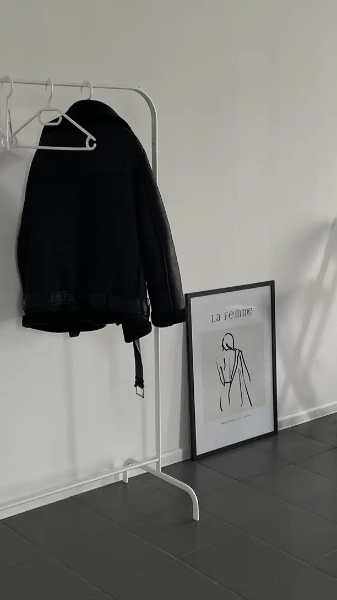

2 Élles EditArquivo
A origem do minimalismo na moda
O que hoje chamamos de quiet luxury tem raiz direta num movimento dos anos 1990 — e nasceu de uma mudança social real, não só estética.

Antes de "quiet luxury" virar termo de busca, existiu o minimalismo dos anos 1990 — e ele não nasceu de uma decisão puramente estética. Foi resposta direta a uma mudança social real: o crescimento das mulheres no mercado de trabalho formal.
O contexto por trás da roupa
No fim dos anos 1980 e início dos 90, uma geração inteira de mulheres precisava de um guarda-roupa que funcionasse em ambiente corporativo — sem depender do excesso decorativo que tinha dominado a década anterior. O minimalismo respondeu com alfaiataria precisa, paleta de cores reduzida e peças andróginas, pensadas pra durar mais de uma temporada.
Quem construiu o movimento
Jil Sander, designer alemã, é tratada como a pioneira mais direta do movimento — corte preciso, cor contida, zero ornamento supérfluo. Helmut Lang e Martin Margiela incubaram a vertente mais conceitual e europeia do minimalismo, enquanto Calvin Klein e Donna Karan, em Nova York, foram responsáveis por popularizar comercialmente o visual pro mercado de massa americano.
Por que isso volta agora
Quiet luxury repete a mesma gramática visual (cor neutra, corte limpo, ausência de logo) mas com lógica de mercado diferente — ver nosso Dossiê sobre a diferença entre quiet luxury e old money. O minimalismo original respondia a uma necessidade prática de guarda-roupa funcional; a versão atual é, em grande parte, posicionamento de marca e discrição como forma de status. Mesma estética, motivação diferente.
Produzido com ajuda de Inteligência Artificial.